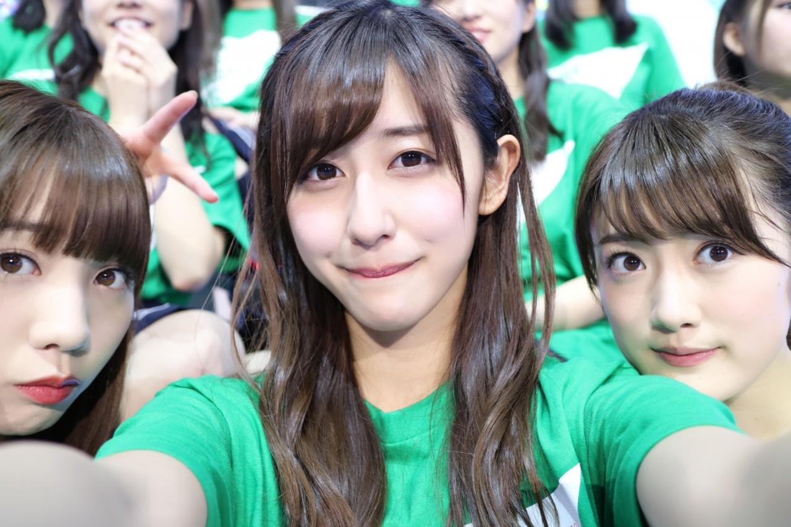

| 2016/12 13 Tue | 妹も。 |
ちはるーむへようこそ！
いつもブログのコメントをスクショして
答える質問コメントを保存しているので
iosアップデートでスクショ無音になったのは
本当ありがたい(﹡ˆ ˆ﹡)
電車とかだと申し訳なくなるもんね...
スクショ音が鳴ってしまうと...
シートベルトの話に共感してくれている方が
思ってたよりも多くて嬉しかった...！
車の話をお話ししてくれる方もいて、
なかなか普段は知り得ない情報を
聞けてよかったです\( ˆ ˆ )/
------------------------------------------♡
！ChihAnswer！
 すが⊿さん
すが⊿さん
・ライブとかのアンコールってメンバーにも聞こえてるの？
→もちろん聞こえてるよ！
その声が聞こえているからこそ、
待たせちゃいけない！と思って
バタバタ急ぎながら着替えてるの◎
"のーぎざか！46！"が、
いつ合うのか、誰が音頭をとるのか、
音頭を取らずに自然に合うのか、と
いつも気になってしまう。
まひまひさん
・写真を撮るのが好きなちーちゃんですが、絵を描いたりするのは好きですか？
→絵を描くのは大好きだよ！
上手い下手は置いておいて...。
いくちゃんやみおなみたいに(ごめん！笑)
特別絵を描くのが苦手というわけではなければ
なーちゃんや万理華みたいに
誰が見ても凄い上手というわけでもないので
披露するのもおこがましいです( ´ｰ`)
だから本当絵が上手い人には憧れる...
でも私の描く絵には愛嬌はあるよ！
多分！
海さん
・明日世界が終わるなら今日は何をしますか？
→お世話になった人や友人、親戚に
片っ端から電話をして
話したい事を沢山話して、
私が美味しいと思うご飯を
たらふく食べて、
カメラ片手に海へ行って
波や空や夕日や星空を撮って、
砂浜の上でゴロンとしながら寝たい！
綺麗な景色を眺めていたいかな。
トシオ009さん
・今回のライブで一番笑ったことは？
→ライブのMC中に、
絢音ちゃんが物凄く話していた事。
とてつもないマシンガントーク。
いつもの乃木中やNOGIBINGOでの
絢音ちゃんは嘘なんじゃないかと思うほど！
絢音ちゃん、めっちゃ喋るじゃん！！
フラワービレッジさん
・ライブコールはちはるになったけど握手会とかだったら今まで通りちーちゃんって呼んでいいんだよね？
→勿論です！
ライブでのコールは、"ちはる"が
一番聞こえやすいので
統一させてもらいましたが
普段は"ちーちゃん"でも"ちはる"でも
何でも好きなように呼んでください(﹡ˆ ˆ﹡)
たるとさん
・どちらも切ることの出来ない２つ以上の物事を上手く両立させる大事なこと、円滑にする方法などあったら教えてください！
→切り替えが大切だと思う！
私だったら乃木坂なら乃木坂、
大学なら大学。
環境も人も何もかも違うから
どちらかに引きづられていたら
どちらかが疎かになる気がするから。
あと、２つとも楽しむこと！
楽しい事じゃないと続けてても意味がないと
私は思ってしまうから。
正直両立は大変だけど
その両立を諦めずに続けた人間は
強くなれるって信じてる！
どんなことでもね\( ˆ ˆ )/
753さん
・バレッタを歌うときに気を付けていた事とかってある？みおなに寄せてく気持ちでいった？それとも自分流のを作ろうと思ってやった？
→自分流のバレッタを踊りたいと思ったよ！
あまり気付かないとは思うけど、
元々のバレッタの歌い方とは
少し違うように歌ってみようか！と
ボイトレの先生と話していて
気付かない程度にアレンジをして歌いました。
でもそのアレンジが難しかったから
沢山練習したよ〜(> <)
あと気を付けたのは堂々とすること！
せっかくのセンターなので
オドオドしていたり恥ずかしがったら負け！
と思ったので、そこは気を付けました◎
質問くださった皆さん、
ありがとうございましたm(_ _)m
やっぱり質問返しは楽しいな〜♪

にやり
----------------------------♡
♬ ChihaMusic
「長く短い祭」椎名林檎さん
世界観がお洒落でカッコよくて
聞いていて楽しい！
ジャズっぽい雰囲気も素敵。
林檎さんの声も色っぽくて艶っぽくて
女性の憧れだな〜
"何か知ら落ち込むだ心は
人熱彷徨つて流し流され
思へば遠くへ来たものだ"
落ち込んだとしても
人波に揉まれて遠くへ行く、
何事も悲観していてはダメだね、
話し言葉だけ現代語になってるのもお洒落。
夏の曲だけど祭の曲だけど
どんな季節でも聞きたくなる曲。
乃木坂工事中での私服チェック、
見てくれた方が多かったようで...！
褒めてくれた皆さんありがとうございますm(_ _)m♡
お母さんと服共有しているって言ったけど
服によっては妹も私と同じのを着るんだよ〜\( ö )/
だから、母、私、妹、と
3人共有の服もあるんです！
3人とも身体も体型もおなじくらいなので◎
おやすみ〜
斎藤ちはる
コメント(167)
2016/12/13 23:58